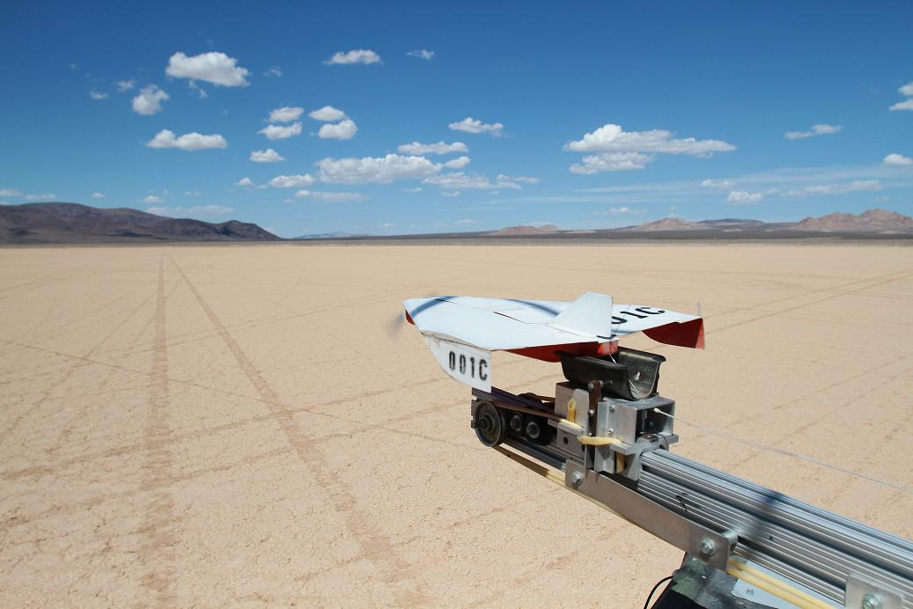
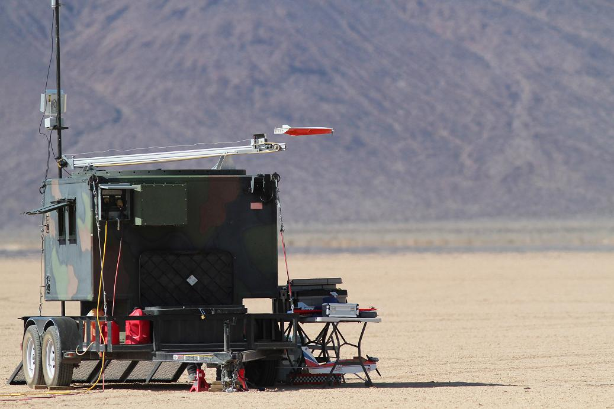

Micro Unmanned Aircraft System
| Endurance | 30 minutes |
| Cruise Speed | 50-150 knots |
| Max Speed | 200 kts |
| Range | 30-50 nautical miles |
| Payload Capacity | 20 - 50 grams total |
| Takeoff | Hand/Air Launch |
| Recovery | Autoland |
| Type | Single engine, tractor, delta modified |
| Construction | Compression molded composite (Kevlar/Carbon) |
| Wingspan | 14" |
| Length | 19" |
| Weight | 30 oz (with payload) |


The GT Aeronautics Bandito MAV UAS is a micro unmanned aircraft designed to fly autonomous, one-way or roundtrip missions to pre-programmed or inflight-programmed waypoints. The aircraft incorporates a modified "Delta Wing" design and a specially-designed laminar-flow airfoil that provides high speed (maximum 200 knots) and payload capacity with a dynamically stable flying platform.
Construction features include a molded, hollow-core, "all-composite", Kevlar/carbon graphite airframe, providing high rigidity, damage resistance, and light weight. The aircraft uses a small, rechargeable Li-Po battery pack to provide up to 30 minutes of power. While intended for one-way missions, the autoland feature provides very accurate landings to programmed points.
The Bandito is specifically designed to be carried aloft onboard a mother ship, but ground hand launches from restricted areas are easily accomplished with NO ADDITIONAL LAUNCH EQUIPMENT REQUIRED. The aircraft utilizes high-intensity LED and Infrared lighting for day and night operations.